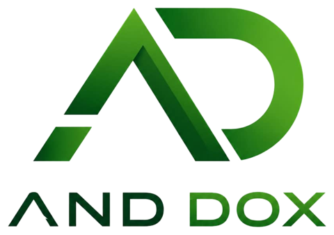

Transport
Des véhicules mis en service pour transporter personnes et marchandises.
Un waqf est un bien qu'on immobilise pour toujours au service du bien commun. Le capital confié n'est jamais dépensé : il est investi dans des activités qui rapportent, et ces revenus financent les daaras et l'éducation gratuite, des petites classes jusqu'au doctorat.
Activités gérées par

Waqf Dolel Xamxam rassemble les contributions de ceux qui veulent que la connaissance se transmette au Sénégal et au-delà. Le capital confié n'est jamais dépensé : il est investi par AND DOX, filiale du Waqf, dans des activités qui génèrent des revenus. Ces revenus financent les daaras et l'éducation gratuite, à chaque étape du parcours.
Un enseignement gratuit, pour que le savoir ne dépende pas des moyens d'une famille.
De la générosité d'aujourd'hui à l'éducation de demain, en trois étapes.
Encourager chacun à contribuer au waqf : un acte de générosité durable, qui profite à la communauté sur le long terme.
Constituer un capital à partir des fonds du waqf et créer la société AND DOX, dans laquelle les investisseurs participent au capital.
Objectif : développer ce capital jusqu'à plusieurs milliards de FCFA.
Consacrer une partie des bénéfices que le Waqf reçoit d'AND DOX à construire et développer des écoles, et à offrir un enseignement de qualité.
AND DOX, filiale du Waqf, gère les activités dans lesquelles le capital est investi. Ce sont des projets concrets, qui génèrent des revenus ici, au Sénégal.
Des véhicules mis en service pour transporter personnes et marchandises.
La vente de motos, un outil de travail et de mobilité pour beaucoup.
Des projets agricoles qui produisent, nourrissent et génèrent des revenus.
D'autres secteurs porteurs, choisis pour leurs revenus durables et conformes à l'éthique du waqf, viendront élargir le financement des daaras et de l'éducation gratuite.
Logements, bureaux et locaux commerciaux qui procurent des loyers réguliers.
Aviculture, embouche bovine et ovine, notamment pour la Tabaski.
Céréales locales, jus, huiles et conditionnement des produits de nos champs.
Installation et vente de kits solaires pour les foyers, les commerces et les daaras.
Approvisionnement en produits de première nécessité à prix justes.
Manuels, Corans et fournitures, au service des élèves comme des revenus du Waqf.
« Lorsque l'homme meurt, ses œuvres s'interrompent, sauf trois : une aumône continue, une science dont on tire profit, ou un enfant vertueux qui invoque Allah pour lui. » Rapporté par Muslim
Le Waqf Dolel Xamxam réunit deux de ces trois œuvres : une aumône qui dure et un savoir qui profite.
Une action Waqf ne peut être ni cédée, ni radiée, ni retirée. Elle est donnée pour toujours, et son capital est investi, jamais dépensé.
Pour les actions Waqf, ce que rapportent les activités ne revient pas au donateur : cela finance la mission.
Chaque contributeur reçoit une attestation et peut suivre son compte en ligne dans son espace personnel.
Les deux types d'actions financent les mêmes activités, au même prix. Ce qui change, c'est ce que vous en attendez. Vous pouvez en prendre une seule ou plusieurs, en une fois ou au fil du temps.
Les dividendes dépendent des résultats des activités et ne sont pas garantis.
Vous pouvez dédier des actions Waqf à un proche disparu. Le nom du défunt figure sur l'attestation d'offrande, et le bien continue d'œuvrer en son nom.
Moyens de paiement : Wave, Orange Money, Western Union.
Vous êtes déjà actionnaire ou contributeur ? Votre espace vous montre vos actions, l'historique de votre compte, vos relevés et vos attestations, accessibles à tout moment.